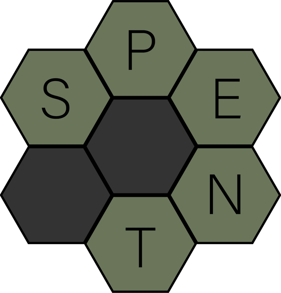

Industrial Design · Sustainable Packaging

Spent Innovations offers a more sustainable alternative to conventional takeout containers. The COVID-19 pandemic has shifted dining habits, with takeout becoming the preferred option, resulting in increased waste. It's time for a solution that allows consumers to enjoy dining out without the guilt.
Spent Innovations' products are made from spent grain sourced from breweries and agar-based bio-plastic, both of which decompose quickly in any traditional composting environment. Say goodbye to microplastics, styrofoam waste, and compostable products that only break down in industrial composting facilities.
- Materials Brewery spent grain · Agar bio-plastic
- End of life Home compostable
- Course Advanced Product Design · CU Boulder
Background
Spent Innovations originated as a project in the Advanced Product Design class at the University of Colorado Boulder. Collaborating with a team of engineers in the M.S. Mechanical Engineering and Design Program, we set out to address unmet needs in the restaurant industry by engaging with consumers, staff, and restaurant owners.
Our goal was to create a product with a clear purpose, avoiding the creation of yet another item that would contribute to more waste. Recognizing that the COVID-19 pandemic had fundamentally changed dining habits, we began developing our need statement to guide our solution.
“Restaurants need an environmentally and economically sustainable method of packaging take-out food that preserves quality.”
Form
The Spent brand needed a distinctive shape that would embody the values of the project. The hexagon, a form frequently found in nature—such as in honeycombs, sea foam, and snowflakes—was chosen for its inherent utility.
Hexagons are structurally strong and can be efficiently packed into larger configurations, making them ideal for takeout packaging. This shape helps ensure that food stays secure during transport while also optimizing space in shipping, ultimately saving money and reducing emissions.
Features
To stand out in a competitive market, Spent containers needed distinct features that contributed to a recognizable form. The Spent packaging family includes three unique options: the large entrée, the lunch/salad, and the cupcake/side dish containers.
Materials
Throughout the development of the Spent Innovations takeout container family, several materials were tested to determine the most effective composition. Various formulas of potato starch, corn starch, agar, and gelatin-based bio-plastics were explored. After thorough testing, our team concluded that an agar-based bio-plastic held the most promise for packaging food with varying moisture levels.
To ensure structural integrity and strength, a proprietary brewer's spent grain/agar composite was developed for the outer layer of the base. This material was compressed and molded using a custom 3D-printed mold (shown below). The final design features an agar bio-plastic lid and lining to prevent material failure with wet foods, while the outer layer of the base is made from a pressed spent grain/agar composite.